地政学
ミンスクはロシア、EU境界、ウクライナ戦争の影響を受ける首都です。連合国家、制裁、物流、亡命社会が都市を揺らします。内陸の整然とした街路の奥で、東欧の安全保障が日常の重さになります。国境感覚も近いです。
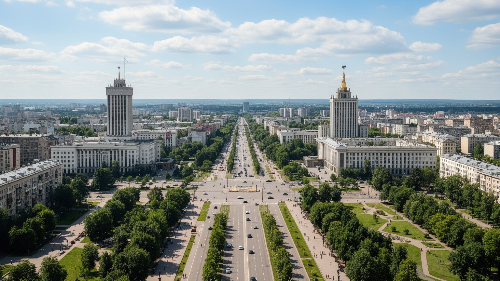
🇧🇾 ベラルーシ共和国 / 首都 / World City Atlas
ミンスクはベラルーシの政治、工業、交通、大学、文化、記憶が集中する首都です。広い大通り、地下鉄、戦争記念、国営企業、IT人材、住宅団地、抗議の記憶をたどると、東欧の国家と日常が近い距離で見えてきます。
都市の骨格
ミンスクは中世の旧市街を前面に出す首都ではなく、第二次世界大戦後に再建された広い軸線、地下鉄、工業地帯、大学、劇場、公園、集合住宅が主役です。整然とした都市形態の奥に、戦争、国家統制、技術者の働き方、若い文化が重なります。
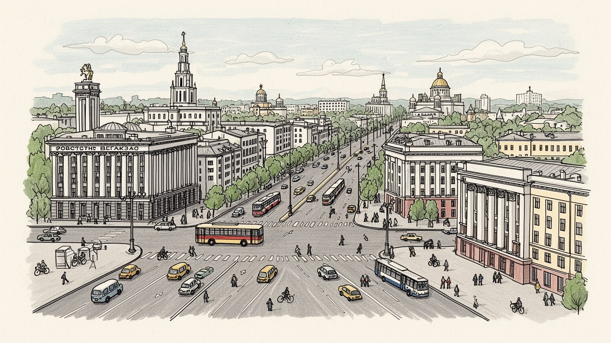
ミンスクはロシア、EU境界、ウクライナ戦争の影響を受ける首都です。連合国家、制裁、物流、亡命社会が都市を揺らします。内陸の整然とした街路の奥で、東欧の安全保障が日常の重さになります。国境感覚も近いです。
機械、車両、電子、食品、IT、行政、大学が雇用を作ります。国営企業の安定と民間技術者の流動性が同居し、制裁や移住で働き方も変わります。工場都市であり、同時にサービスと知識労働の中心です。賃金差も見えます。
正教会、カトリック教会、劇場、図書館、国立博物館、音楽学校が街の厚みを作ります。戦争記憶と国家文化が強く見える一方、若い芸術、地下文化、言語の選択も静かに続きます。祈りと舞台が今も近くにあります。
旅行者は独立大通り、上町、戦争博物館、国立図書館、公園を巡ります。住民は地下鉄、住宅団地、市場、冬の雪、親族の支えを使い分けます。端正な景観の奥には、統制と安心が混じる日常があります。歩くと見えます。
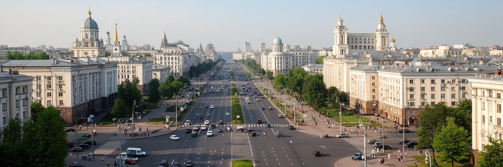
ミンスクを最初に印象づけるのは、独立大通りを中心に続く広い道路、整った建物の壁面、大きな広場です。第二次世界大戦で街は甚大な破壊を受け、戦後の再建ではスターリン様式の記念碑的な都市軸が作られました。そのためミンスクの中心部は、古い町家の迷路よりも、国家が計画した秩序を強く感じさせます。歩道は広く、建物の高さはそろい、地下鉄駅や官庁、大学、劇場が大通りに接続します。この端正さは観光客に分かりやすい魅力を与えますが、同時に権力の視線が通りやすい空間でもあります。大きな広場は式典、パレード、集会、警備を受け止め、街路の開放感は政治的な緊張も可視化します。住民にとって大通りは通勤路であり、買い物と散歩の場所であり、冬の風が吹き抜ける場所でもあります。夜には照明で建物の輪郭が浮かび、都市は舞台のように見えます。しかし、その舞台の裏には住宅団地、工場、学校、市場が広がり、整然とした中心軸だけでは生活の全体は分かりません。ミンスクの大通りは、戦後復興の誇り、ソ連型計画都市の美学、国家権力の可視性、日々の移動を一つに結ぶ都市装置です。街を読むには、その直線の美しさと、そこに集まる人の表情を同時に見る必要があります。雪の日には直線の遠近がさらに強まり、都市の計画性が身体感覚として伝わります。静かな朝にも見えます。
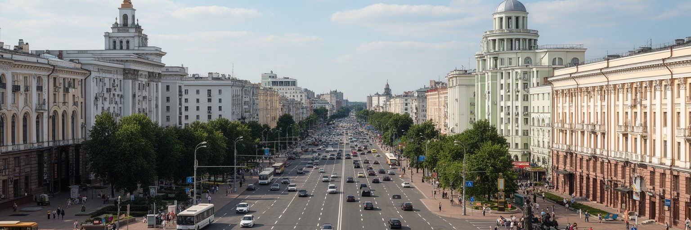
ミンスクはベラルーシの首都として、政府庁舎、省庁、議会、裁判所、大使館、国営メディア、大学、研究機関を集中させています。国土のほぼ中央に位置し、鉄道と道路の結節点でもあるため、行政の中心であるだけでなく、人と情報が集まる実務の中心です。ベラルーシでは国家の役割が経済や社会に強く残り、首都の空間にもその性格が表れます。官庁街、国営企業の本社、記念施設、警備のある広場は、政策が街路に近いことを示します。一方で、市民はその国家機能のすぐそばで地下鉄に乗り、大学へ通い、買い物をし、子どもを公園へ連れて行きます。首都で暮らすことは、制度の利便性と監視の近さを同時に持つことでもあります。ミンスクは地方から学生や労働者を集め、医療や高等教育、文化施設の選択肢も広いです。そのため全国の若者にとって上昇の場所であり、同時に家賃や競争が高い場所でもあります。外交面ではロシアとの連合国家、欧州との緊張、制裁、ウクライナ情勢が首都の雰囲気を左右します。街の穏やかな景観の背後に、国際関係の圧力が常にあります。ミンスクを首都として見る時、重要なのは規模だけではありません。国家が生活の中へどのように入り込み、市民がその近さの中で働き、学び、距離を取るかを読むことです。地方都市から来た人ほど、その集中の力と重さを実感します。
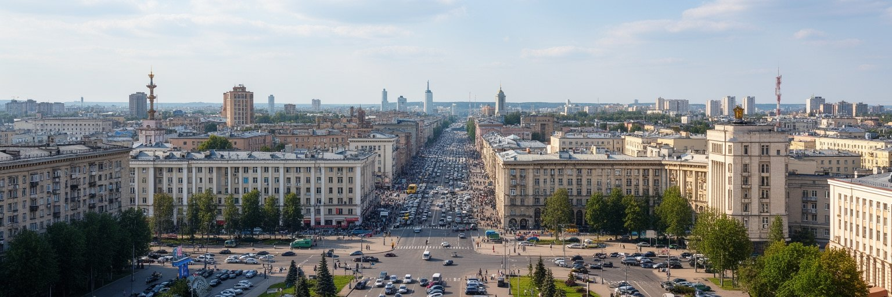
ミンスクはベラルーシ最大の工業都市であり、機械、車両、電子、光学、食品加工、印刷、建材などの産業を抱えています。ソ連期に育った工場群は、トラック、トラクター、冷蔵庫、精密機器のような実物経済を支え、現在も雇用と都市の自尊心に深く関わります。同時に、ミンスクはIT技術者の都市としても知られてきました。大学、数学教育、ソフトウェア企業、アウトソーシング、スタートアップの経験が集まり、工場労働とは違う働き方を広げました。この二つの産業像は対立するだけではありません。製造の現場にも自動化、設計、物流、データ管理が入り、技術者の知識が必要になります。ただし、制裁、外資の撤退、決済や輸出の制約、人材流出は、都市経済に重くのしかかっています。政治的な不安を理由に国外へ移る技術者も多く、企業は国内市場、ロシア市場、代替取引の中で選択を迫られます。国営企業の安定は雇用を守りますが、競争力や賃金の伸びには限界もあります。ミンスクの労働を読むには、中心部のカフェで働くプログラマーだけでなく、郊外の工場、地下鉄で通う技能者、大学の研究室、家族を支える公務員も見る必要があります。産業都市としてのミンスクは、計画経済の遺産とデジタル時代の移動性が同じ街に並ぶ場所です。その重なりが、将来の可能性と弱さの両方を作っています。
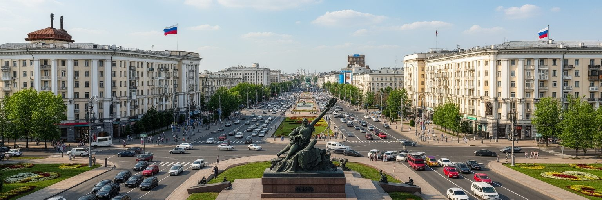
ミンスクの都市記憶の中心には、第二次世界大戦の破壊と再建があります。ナチス・ドイツの占領、ゲットー、処刑、パルチザン、街の壊滅的な被害は、ベラルーシ社会の記憶に深く刻まれています。現在の中心部が整然としているのは、戦後に作り直されたからであり、その美しさは喪失の上にあります。大祖国戦争博物館、勝利広場、記念碑、地下道の展示、学校教育の行事は、戦争を国家の物語として伝えます。記憶は犠牲者を悼む場であると同時に、国家の正統性を示す政治的な資源にもなります。そのためミンスクの戦争記念は、静かな追悼と公式儀礼の二つの顔を持ちます。ユダヤ人の歴史やゲットーの記憶、ポーランド系住民、占領下の日常、戦後の沈黙も、単純な英雄物語だけでは捉えられません。街を歩くと、広場の堂々とした記念碑と、住宅地の中の小さな碑が異なる記憶の層を語ります。住民にとって戦争は祖父母の経験や家族の写真に近く、国家行事だけのものではありません。観光客が記念施設を訪れる時、重要なのは展示の言葉を鵜呑みにすることではなく、誰の記憶が強調され、誰の声が見えにくいかも考えることです。ミンスクは破壊を経て再建された都市であり、その再建の秩序自体が戦争記憶の一部になっています。広い大通りは復興の成果であり、失われた街への沈黙でもあります。
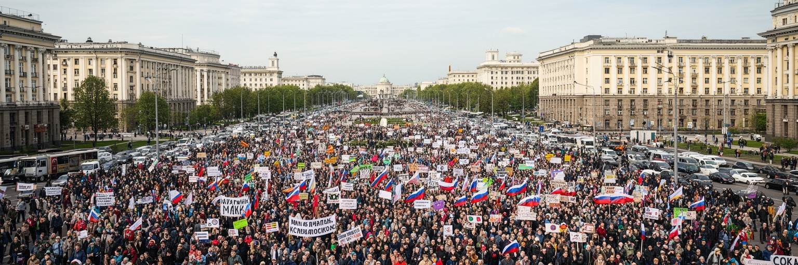
ミンスクの政治性は、官庁や記念碑だけでなく、広場と街路の記憶にあります。二〇二〇年の大規模な抗議は、選挙、暴力、拘束、亡命、連帯の記憶として、市民生活に深い影を残しました。中心部の広い道路や住宅地の中庭は、人々が集まり、歩き、歌い、互いを確認した場所でした。同時に、警察や治安機関の存在も強く可視化され、公共空間は自由に使える場所ではないことがはっきりしました。現在のミンスクを歩くと、街は落ち着いて見えるかもしれません。しかし、沈黙は必ずしも同意を意味しません。政治的な発言を避ける会話、国外に出た友人、閉じたメディア、慎重な文化イベント、家族の中の意見の違いが、都市の空気を形作っています。首都は国家権力の中心であるため、政治の変化はすぐに街路へ現れます。大通りの開放感は、パレードには向いていますが、抗議にも向いていました。そのため空間の設計と統制の技術は切り離せません。ミンスクの政治を理解するには、外から見える制度だけでなく、住民がどの言葉を選び、どの場所で集まり、どの記憶を家庭の中にしまうかを見る必要があります。抗議の経験は消えたわけではなく、亡命先、オンライン、日常の小さな判断の中で続いています。ミンスクの静かな街路は、秩序の表面と、市民の記憶の深さを同時に持っています。その二重性が、首都の空気を今も複雑にしています。
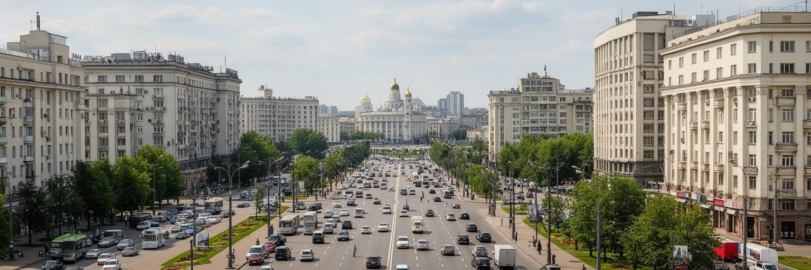
ミンスクの日常は、中心大通りだけでなく広い住宅団地の中にあります。ソ連期から続く集合住宅、学校、幼稚園、診療所、スーパー、緑地、中庭、バス停が近くに配置され、住民は徒歩と公共交通を組み合わせて暮らします。多くの地区では建物は画一的に見えますが、中庭のベンチ、子どもの遊び場、季節の花、駐車の工夫が生活の個性を作ります。冬は雪と暗さが長く、暖房、除雪、通勤時間、靴や衣服の選び方が日常を左右します。夏には公園や川沿いに人が出て、住宅地の緑が街の居心地を支えます。ミンスクの住宅政策は、国家の供給、民間開発、郊外化、家計の負担が重なっています。新しい高層住宅は選択肢を増やしますが、家賃やローン、交通、学校の容量をめぐる不安もあります。若い世帯は親世代の住宅資産や支援に頼ることが多く、独立の時期は収入に左右されます。住民にとってミンスクの魅力は、比較的整った公共交通、教育、医療、緑地、文化施設にあります。一方で、政治的な息苦しさ、賃金の限界、国外移住の選択も日常の会話に入ります。観光客が見る端正な中心部の背後には、数十万人が暮らす団地のリズムがあります。朝のエレベーター、学校へ向かう子ども、仕事帰りの買い物、冬の窓明かりが、この首都の本当の温度を作っています。近所の小さな店や市場も、生活の安心を支えます。
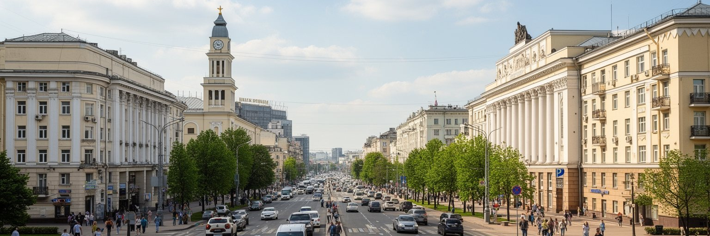
ミンスクの文化は、国立オペラ・バレエ劇場、劇場、美術館、国立図書館、大学、音楽学校、映画祭、書店、カフェに広がります。公式文化は国家の支援を受け、クラシック音楽、バレエ、戦争記念、民族文化を端正に見せます。一方で、若い芸術家、独立系の音楽、写真、デザイン、文学、オンラインメディアは、より小さく慎重な場で表現を続けます。ベラルーシ語とロシア語の関係も、文化を読む重要な入口です。日常ではロシア語が広く使われますが、ベラルーシ語は歴史、アイデンティティ、政治的な選択と結びつき、言葉そのものが社会的な意味を持ちます。宗教施設も文化の層を作ります。正教会、カトリック教会、かつてのユダヤ人コミュニティの記憶は、ミンスクが単一のソ連都市ではなかったことを示します。検閲や自己規制の環境では、舞台や展示の言葉は直接的でない表現を選ぶことがあります。その曖昧さを読む力も、都市文化の一部です。国立図書館の巨大な建物は、知識国家の象徴として目立ちますが、文化の生命は大きな建築だけでなく、翻訳者、教師、俳優、学生、読書会、家庭の本棚にもあります。ミンスクの文化は、公式の美しさと、抑制された個人の声が同時に存在する場所です。劇場の幕が上がる時、街の静かな言葉が別の形で現れます。観客の沈黙にも、共有された経験が宿ります。
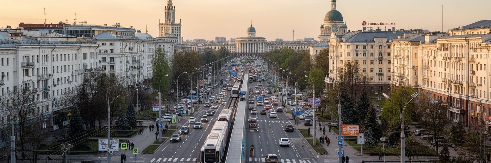
ミンスクの移動を支える中心は地下鉄です。一九八四年に開業した地下鉄は、広い大通り、住宅団地、大学、工業地帯、中心部を結び、冬の寒さや渋滞を避ける日常の骨格になっています。駅は清潔で分かりやすく、バス、トロリーバス、トラム、郊外鉄道と接続します。ソ連型都市では道路が広く、自動車も重要ですが、公共交通の信頼性が生活の時間を大きく左右します。朝夕の通勤では、住宅地から中心部や工場へ人が流れ、地下鉄の車内には学生、工場労働者、公務員、買い物客が混じります。ミンスクは国際空港、鉄道駅、環状道路を通じて国内外にも接続しますが、制裁や航空路の制約は移動の自由を狭めています。近隣国への移動や貨物輸送は、政治情勢に敏感です。都市内部では、歩道の幅や街路樹が歩きやすさを支えますが、広い道路は横断を難しくし、冬の雪や凍結は高齢者に負担をかけます。自転車や歩行者空間をどう増やすかも課題です。地下鉄は効率的な移動手段であると同時に、都市の社会を観察できる場所でもあります。車内の静けさ、広告、制服、スマートフォンの画面、雪の日の混雑が、ミンスクの日常を映します。広い都市を毎日の生活圏へ縮める交通網があるからこそ、この首都は大きな団地と中心機能を結び続けられます。駅前の小売も、通勤者の生活を細かく支えます。毎日です。
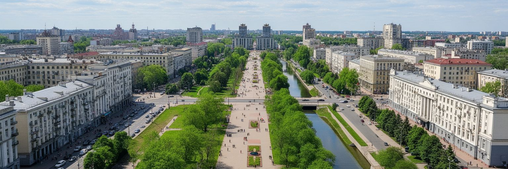
ミンスクは硬い大通りと官庁建築の印象が強い一方、川と緑地に支えられた都市でもあります。スヴィスラチ川は中心部を流れ、上町や公園、住宅地の余白を結びます。ゴーリキー公園、勝利公園、植物園、貯水池、住宅団地の中庭の緑は、住民に散歩、運動、子どもの遊び、夏の涼しさを与えます。ベラルーシは森林と湿地の国であり、首都の緑もその国土感覚を都市の中へ持ち込みます。冬が長いミンスクでは、春の新緑や夏の水辺は特に大切な季節の解放感になります。家族連れ、学生、年配者、ランナーが公園を使い、カフェや屋台、遊園地のような軽い楽しみも加わります。ただし、緑地は自然に残るだけでは十分ではありません。河川の水質、岸辺の歩行環境、冬季の管理、開発圧力、交通騒音への対応が必要です。大きな広場が国家の舞台なら、川沿いと公園は市民が少し肩の力を抜ける場所です。政治的な緊張がある都市では、何気ない散歩やベンチでの会話も重要な社会空間になります。緑地は観光名所として派手ではありませんが、生活の質を測る確かな指標です。ミンスクの都市形態を読む時、石造りの記念碑と同じくらい、川の曲線や木陰の存在を見る必要があります。硬い計画都市は、こうした緑の余白によって人間的な尺度を取り戻します。水辺の静けさは、都市の緊張を少しほどきますね。
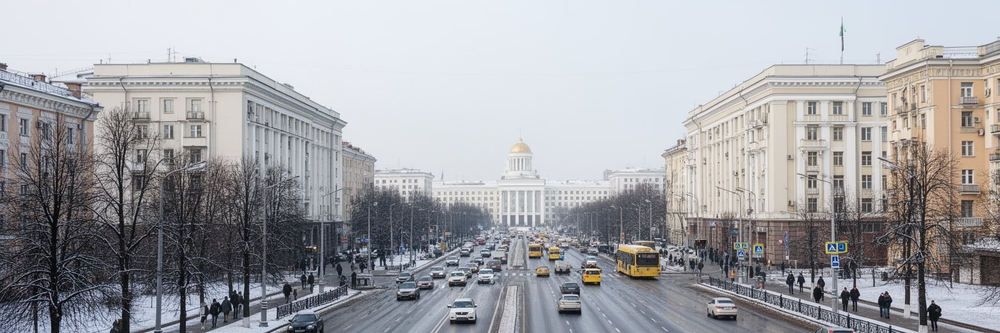
ミンスクの気候は湿潤大陸性で、長い冬と比較的涼しい夏が特徴です。冬は雪、凍結、曇天、短い日照が続き、都市の使い方を大きく変えます。住民は厚いコート、暖房、地下鉄、屋内施設、早い日没に合わせて生活を組み立てます。歩道の除雪、道路の凍結対策、バス停の待ち時間、住宅の断熱、公共施設の暖かさは、単なる快適さではなく健康と安全に関わります。ソ連期からの集合住宅は集中暖房に支えられ、冬の窓明かりはミンスクの典型的な風景です。一方で、古い建物のエネルギー効率や暖房費、気候変動による降雪の変化、急な凍結や雨への対応は課題です。夏には公園や水辺がにぎわい、カフェのテラスや祭りが街を軽くしますが、熱波や強い雨も増えています。気候は観光にも影響します。冬のミンスクは厳しく見えますが、雪に包まれた大通りや劇場の夜は独特の美しさがあります。春と秋は歩きやすく、街の緑と建築の輪郭がよく見えます。住民にとって季節は、感傷ではなく実務です。靴底、通学時間、車のバッテリー、野菜の価格、休日の過ごし方が天候に左右されます。ミンスクを理解するには、夏の写真だけでなく、冬の朝の静かな駅や、凍った歩道をゆっくり歩く人の姿を見ることが欠かせません。長い冬への適応が、都市の忍耐と秩序を形作っています。季節の重さが、人の歩調まで整えます。
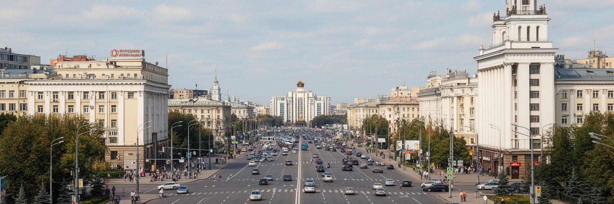
ミンスクを読む面白さは、整然とした表面の下に複数の時間が重なることです。戦前の多民族都市の痕跡、第二次世界大戦の破壊、戦後のソ連型再建、独立国家の首都機能、国営工業、IT人材、二〇二〇年の抗議、現在の制裁と移住が、同じ街路に折り重なっています。中心部の大通りは美しく保たれ、地下鉄は便利で、住宅団地には緑があります。そのためミンスクは一見すると静かで管理された首都に見えます。しかし、静けさの奥には、政治的な沈黙、家族の移住経験、戦争記憶の公式化、言語の選択、職場の安定と閉塞感があります。都市を理解するには、壮大な広場だけでなく、工場の門、大学の廊下、劇場の客席、雪のバス停、川沿いの散歩道をつなげて見る必要があります。ミンスクは西欧型の観光都市でも、単なるソ連の残像でもありません。ベラルーシという国家が、秩序、記憶、統制、教育、技術、生活の安心をどのように組み合わせてきたかを見せる首都です。外部からの制裁や戦争の影響は、都市の将来を狭める一方、市民の知識や文化の蓄積は簡単には消えません。ミンスクを歩くことは、端正な都市景観を楽しむだけでなく、見えにくい声と選択を想像することでもあります。その視点を持つと、広い大通りの静けさにも、住宅の窓明かりにも、深い都市の物語が見えてきます。静かな表面を丁寧に読むほど、この都市の厚みが増します。